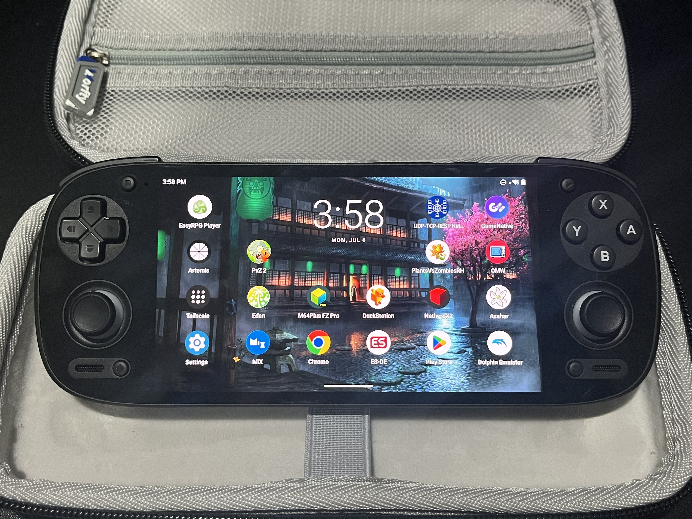
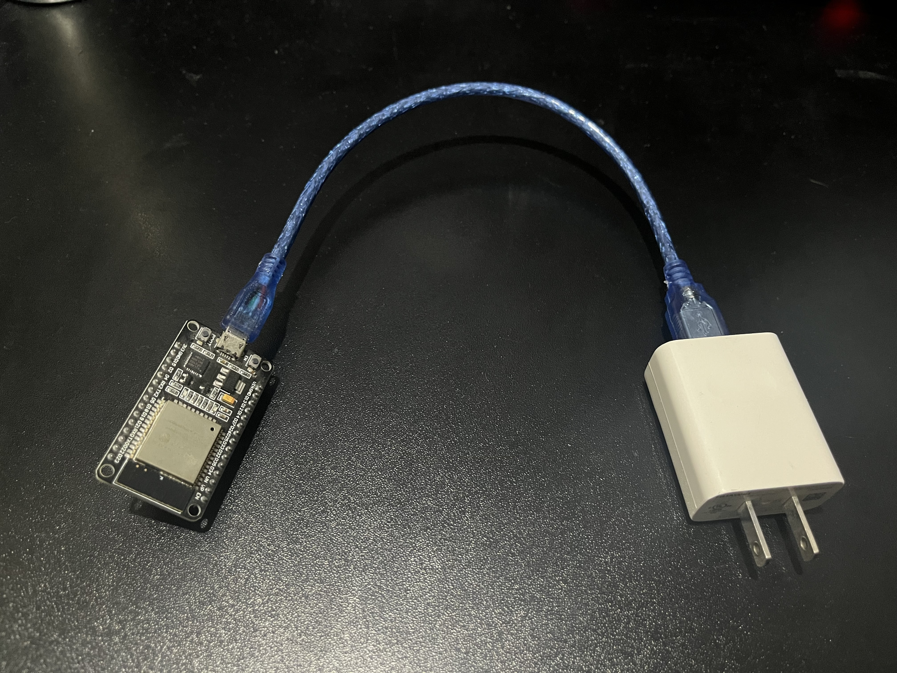

1. The beach-house idea
After spending a week at my family's yearly beach house rental, I asked myself: what if I could play my PC games from here? What if, better yet, I could control it, with very little latency, from anywhere with decent internet?
I had just gotten a brand new Retroid Pocket 5 (RP5), and I was amazed by how I could play almost every game I wanted from retro consoles on the go. But then something came to my mind: what if I want to play very demanding games? Games that even this device wouldn't run hardware-wise?
I knew streaming services were a thing, but the input lag for some of them was just not acceptable, namely, shooters. There also was the whole service subscription thing I preferred not to indulge in. Turns out, these games I could run on my desktop PC no problem. Could I, somehow, play all of them from my RP5, coming from the PC itself?

2. Getting the Host and Client Right
My research began, and deep down the rabbit hole of host-client streaming software, I found out about Sunshine. What Sunshine brought to the table was self-hosted game streaming using the GPU's encoder directly to pack up and send the game capture, which meant an immense speedup.
To connect to it, Moonlight was the perfect match, using NVIDIA's GameStream protocol engineered specifically for ultra-low latency. But I didn't stop at the base software; I dug into the repository forks.
This setup works great. You can't even tell you're streaming. I dug through blogs and YouTube videos to push the configurations, tuning the 1080p default down to 720p if the network was unstable, and capping the bitrate around 20.0 Mbps depending on the connection.
3. Bypassing the LAN with Tailscale
I could finally play any game I have on my PC from another room. But I wanted more: what if I could play from anywhere? I was limited by my LAN. I knew about port forwarding, but that was not good enough in terms of security—I didn't want a port open 24/7.
To my surprise, I didn't know about Tailscale before this. What it means is that we can have a cluster of our registered devices, and by using identity-based access, Zero Trust networking, and WireGuard encryption, we interconnect all of them in an extremely reliable way.
Tailscale assigns IPv4 addresses not reachable from outside our private "Tailnet".
The PC and RP5 can talk to one another securely as if they were on the same local network.
An actual way to stream over the internet, using my desktop PC whenever I want, wherever I want.
4. The Sleeping PC and the ESP32
There was just one tiny detail: what if my PC is in sleep mode? These services stop when the PC is asleep.
There are requests called WoL (Wake on LAN) that devices can send to one another within the same network to wake up a receiving device. It's just a payload with 6 bytes of 0xFF followed by the target device's MAC address, repeated 16 times.
FFFFFFFFFFFF
XX:XX:XX:XX:XX:XX
... (16 times)That fixes waking up the PC locally. But isn't the whole point not being in the same network? Could we use this WoL request remotely?
I worked with what I got: an ESP32 I got back in high school for a subject called Intelligent Systems. By registering our ESP32 as a node inside our Tailnet, embedding code that sends magic packets, and connecting it to the same local network as the PC, we bypass the LAN limitation.
Now, whenever I want to wake up my PC remotely, I just send a UDP message to the ESP32 through the Tailscale network on port 9999. The listener picks up the request, sends the magic packet to my PC locally, fires up Apollo and Tailscale, and Artemis connects.

Conclusion
After I got this working I installed the Artemis client onto my MacBook, and since everything was already dealt with, I could just use my PC remotely there too. All of this couldn't have been possible had my family not rented a beach house for 1 month which made me think "hey, it would be cool if I could play my PC games from here".
The knowledge gained can be extrapolated into a whole bunch of other use cases, and the network concepts are very valuable, too. I had a fun time getting to know all these pieces of software and hardware, and how they interacted with one another.
It's also safe to say that by streaming the PC we're not just bound to playing: we can use the PC however we want, which just adds up to the amazing benefits of running this ecosystem.